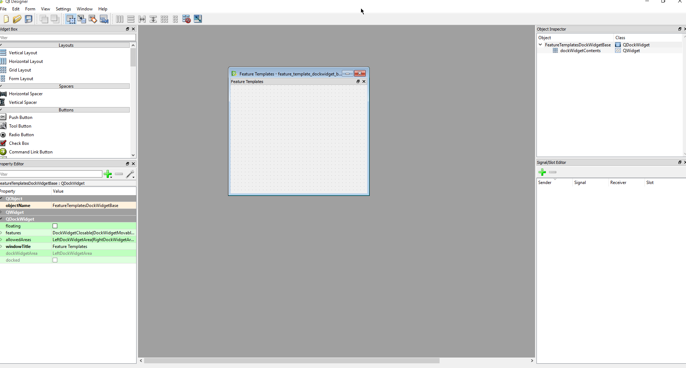
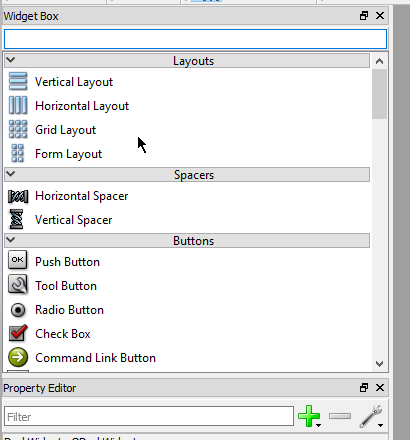
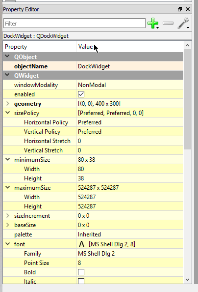
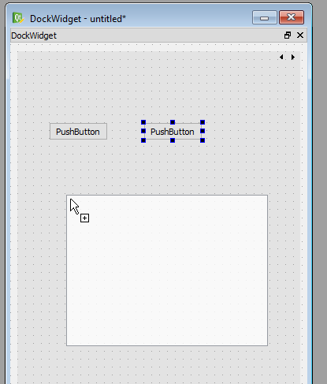
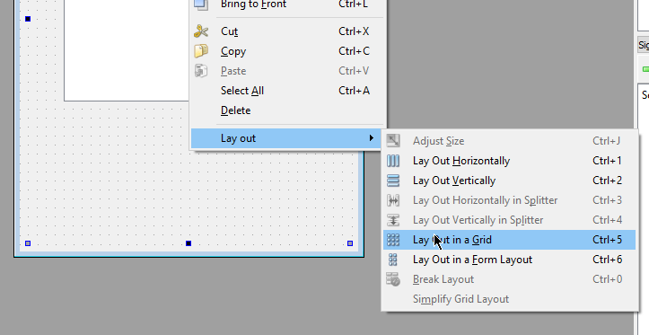
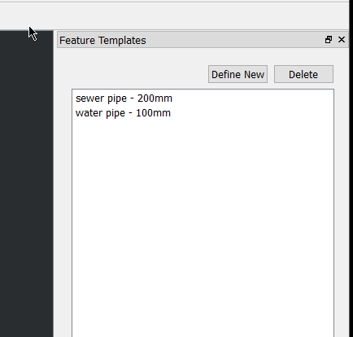

Creating the UI and first logic
To create the UI you will need Qt Designer. This is shipped with QGIS and installed in the bin folder of the install.
Run the application called designer.exe
After we open designer we are going to select Open.. and select feature_template_dockwidget_base.ui

Select and delete the label that is already in the dock widget.
Widgets

Properties

For our widget we are going to need a Stacked Widget.
- Drag the stack widget onto the form
- Right click in the empty form and select
Layout -> Layout in Grid
All Qt widgets are contained in layouts. The layout controls how the widgets fit together.
We can use the stacked widget to add move "pages" to our widget later if we connect the define new button.
You will also need 3x Push Button and a List Widget.
Drag the buttons and list widget inside the stacked widget

Don't worry if they don't look right. When we set the layout it will fix them up for us

- Select a button and hit F2 to label the buttons. We need Define new, Delete, Apply
- Also update the object name on the buttons and list widget (
templatesList,newButton,deleteButton,applyButton) - Drag the widget around the form to change the layout
The name of the object is important because we will use this in the code to set more things.
- Save the UI file into your plugin working folder. Call it
ui_templatedock.ui
Generating the UI files
Qt has a handy function for creating the UI files on the fly. This removes the build step for generating the UI files
Qt only needs the path to the .ui file and it will generate the Python object on the fly ready to use.
Open feature_template_dockwidget.py
FORM_CLASS, _ = uic.loadUiType(os.path.join(
os.path.dirname(__file__), 'feature_template_dockwidget_base.ui'))
uic.loadUiType will load the UI on the fly from the .ui file without the need for the compile step.
Adding some items to the list
Before we start on doing anything in QGIS itself. Let's just add a few items to the list.
It's going to be a hard-coded list for now but we can add config for it later.
Define it like this in the feature_template_dockwidget.py file
items = {
"water pipe - 100mm":
{
"type": "water pipe",
"size": 100
},
"sewer pipe - 200mm":
{
"type": "sewer pipe",
"size": 200
}
}
In the FeatureTemplatesDockWidget class we need to add new method to load the items
def load_items(self):
self.templatesList.clear()
for key in items:
self.templatesList.addItem(key)
in the run method of feature_template.py. Make sure you call load_items
def run(self):
...
self.iface.addDockWidget(Qt.RightDockWidgetArea, self.dockwidget)
self.dockwidget.show()
self.dockwidget.load_items()
Signals and Slots
Qt, and QGIS, uses Signals and Slots to message objects about events that have happened. They are a great thing to use when parts of your applications need to talk to each other.
Here is a quick run down.
- Objects can define signals which are emitted.
- Object can connect slots to these signals to handle the event
- Normal Python functions can be used for slots without any extra work
Here is an example:
def do_event(self):
print "Do something"
mybuttton.pressed.connect(self.do_event)
Connect the Update/Apply button
With that we are going to connect the Apply/Update button in our FeatureTemplateDockWidget object to
emit a signal to tell something else to handle the apply logic.
In FeatureTemplateDockWidget we need to define a signal called templateApplied like so
class FeatureTemplatesDockWidget(QtGui.QDockWidget, FORM_CLASS):
templateApplied = pyqtSignal(str, dict)
closingPlugin = pyqtSignal()
This signal will emit a string and a dictionary.
Note: Take note on where templateApplied is defined. Outside of any methods at the class level
Inside the __init__ method we need to connect the Apply button pressed event and handle the extra logic
def __init__(self, parent=None):
super(TemplateDock, self).__init__(parent)
self.setupUi(self)
self.applyButton.pressed.connect(self.apply_template)
def apply_template(self):
# Don't do anything if there is no selection text
if not self.templatesList.currentItem():
return
name = self.templatesList.currentItem().text()
# Get the fields from the items list
fields = items[name]
self.templateApplied.emit(name, fields)
We now need to connect to this signal in the FeatureTemplates class
def initGui(self):
self.dock = TemplateDock()
self.dock.templateApplied.connect(self.apply_template)
....
def apply_template(self, name, fields):
pass
We will come back and wire up apply_template soon
Run pb_tool deploy again and restart QGIS (or use the plugin reloader) to test the plugin. You should now see this:
